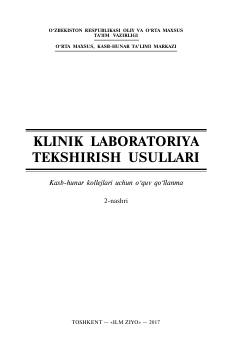

KLKlinik laboratoriya tahlillari va diagnostika usullari bo'yicha amaliy o'quv qo'llanma.
Ushbu o'quv qo'llanma kasb-hunar kollejlari va tibbiyot yo'nalishidagi talabalar uchun mo'ljallangan bo'lib, klinik laboratoriya tekshirish usullari, biomateriallarni yig'ish qoidalari va tahlil me'yorlarini o'z ichiga oladi. Kitobda turli biomateriallar bilan ishlash, zaruriy eritmalar tayyorlash hamda laboratoriya diagnostikasining asosiy tamoyillari batafsil bayon etilgan. Shuningdek, u amaliyotchi tibbiy laborantlar va o'qituvchilar uchun ham amaliy qo'llanma sifatida xizmat qiladi.